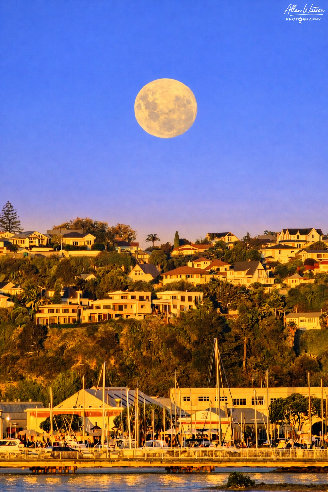

Capturing Hawke's Bay and Beyond
Through dramatic light, atmospheric landscapes, and the beauty of the night sky, Allan Watson Photography captures the mood and character of Hawke’s Bay and beyond. From cinematic coastlines and waterfalls to deep-space astrophotography, each image is created to evoke a sense of place, wonder, and timelessness.
